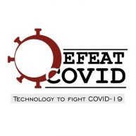
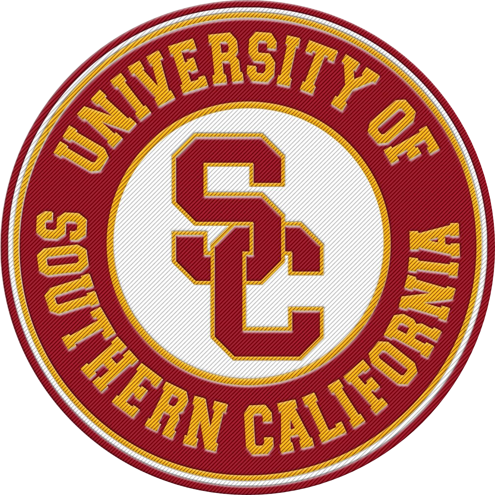

Darpan Jain
Lead Machine Learning Engineer with over half a decade of experience spearheading ML initiatives and leading development of scalable data-driven systems. Current work in Applied ℕatural Language Processing & Large Language Models (LLMs).
Technical Skills

Programming Languages
Python / Java / C / C++ / Javascript / GoLang / Scala / R / MATLAB / Julia / Embedded C
Machine Learning
Tensorflow / PyTorch / MXNet / PySpark / OpenCV / CUDA / Librosa / NLTK / SpaCy / OpenNLP / TensorRT / TFLite
Databases
SQL / NoSQL / Hadoop / Redis / MongoDB / InfluxDB / ElasticSearch / Kafka / Splunk / Datadog

Frameworks
Docker / Kubernetes / Airflow / Tableau / Django / Flask

Cloud Platforms
Amazon Web Services (AWS) / Google Cloud Platform (GCP) / Microsoft Azure
Frontend
HTML / CSS / Javascript / ReactJS / NodeJS / Bootstrap / VueJS
Work Experience
Pixstory
Lead Machine Learning Engineer
- Heading development of Pixstory's Retrieval Augmented Generation (RAG) based Conversational Search, accurately answering user queries by grounding responses in a verified knowledge base and generating nuanced, de-opinionated answers.
- Mitigating hallucination issues in large language models and addressing misinformation by ensuring reliable information retrieval through rigorous source vetting and verification. The retrieval process is re-ranked based on the level of trustworthiness of the sources.
- Public beta launch upcoming, featuring an immersive and user-friendly interface. Stay tuned for updates!
(May 2023 - Present)
Information Sciences Institue (USC-ISI)
Applied Researcher
- Led development of conflict resolution dialogue agents for DARPA’s Civil Sanctuary Program, as an Applied Researcher with the Natural Language group (CUTE LAB NAME) at ISI.
- Designed and deployed a scalable chatbot for mitigating toxic behavior on social media through non-violent communication strategies, including prompting GPT-3’s advanced transformer-based (the model that drives ChatGPT!) generation capabilities.
- Moderated over 15k multilingual posts with 85% true positive rate in French and German on popular subreddits.
- Check out more details here
(January 2022 - July 2023)
Lumin.ai
Software Development Intern
- Contributed in developing the conversational AI for Lumin.ai as a Smart Scheduler & Sales Accelerator to enhance customer interactions and optimize the sales funnel for 5+ product and franchise owners.
- Advocated for efficient documentation using Markdown and managed customer interactions for multiple clients.
(May 2022 - August 2022)
Warner Bros Discovery
Software Development Engineer - Machine Learning
- Boosted user engagement on Discovery Plus (D+) as part of the ”Personalization and Recommendations” team.
- Employed Apache Spark and Airflow to build efficient ETL pipelines in a distributed environment, and executed A/B tests to validate and refine new recommendation features for the D+ platform.
- Led the development of server-side ad-insertion SDKs for Android and Web, driving increased ad revenue for D+ sports content in Europe.
(September 2020 - August 2021)
AdSparx Inc
(now Warner Bros. Discovery)
Machine Learning Engineer
- Spearheaded the research, design, and development of MiDAS, a micro-service-based system serving personalized ads to millions of users on OTT platforms.
- Designed and trained Computer Vision models with TensorFlow, deployed on Kubernetes to enable dynamic server-side ad-insertion for 40+ channels, boosting revenue for U.S. publishers.
- Developed a tool to automate the dataset annotation process, by leveraging SCTE-35 markers in HLS and DASH streams.
- Leveraged multi-step recurrent networks on time series data for ad break forecasting. This resulted in a 30% reduction in resource consumption and network calls to the SSAI backend.
- Member of the senior development team at AdSparx that was acquired by Warner Bros Discovery in September 2020.
(March 2019 - September 2020)
IoTIoT
Machine Learning Engineer
- Led and mentored a team of 30 for catering Machine Learning applications with on-Edge capabilities, for Embedded Linux platforms.
- Developed a crowd flow analysis product using face and voice recognition for event registration, optimized for on-chip GPUs to showcase AI-on-Edge computing capabilities.
- Worked on Pose estimation for detection and tracking of human body pose to create an immersive experience for users for a video gaming platform.
(May 2018 - January 2019)
Consulting Projects

Defeat COVID-19
Machine Learning Lead
- In light of the COVID-19 pandemic, co-founded DefeatCovid, a not-for-profit organization, which leveraged technology to increase public awareness and aid in curbing the spread of the disease.
- Led a team to build a tool to provide early stage diagnosis of the symptoms and risk assesment for Covid-19, using crowdsourced data and Deep Learning techniques.
- The tool included a Question-Answer Chatbot based on BERT to help navigate users through the website, provide information from government verified sources and address misinformation about Covid-19.
- It also included a real-time dashboard and interactive heatmap interface to identify at-risk localities.
(March 2020 - May 2020)
Prasaurus Sports Analytics
Artificial Intelligence Consultant
- Led a team to design a framework for real-time action recognition and perform statistical analysis, providing deep insights for player performance tracking and improvement, for an academy training national badminton players.
- The models captured Spatio-temporal features across frames based on two-stream networks and ActionVLAD for Action Recognition, and shuttle and player tracking using a custom trained MobileNet, to provide metrics such as 'Dominant areas'.
(June 2019 - September 2019)
InProspect Technologies
Machine Learing and Strategic Consultant
- Managed a team of engineers to design and develop a product to propel undergraduates towards career goals by providing curated career guidance. The platform provided analytics for educational institutions via the 'Enterprise Resource Planning' system.
- Created a personalization system for recommendations to help achieve user-specified goals by aiding in coursework selection and extra-curricular activities. This ensured high success rates in the individuals' field of interest.
- Was part of the strategic planning for incorporating product changes to drive user engagement.
(March 2019 - May 2019)
Ubuntoo LLC
Content Contributor
- A global environmental solutions platform promoting sustainable economic growth.
- Researched and created technical reports on companies and organizations innovating in the use of Machine Learning and Computer Vision.
- The solutions included high accuracy waste sorting systems and autonomous waste collection bots; centered around using technology to tackle environmental issues and promote sustainable development.
(September 2019 - December 2019)
Occipital Tech
(now AgroGrade)
Computer Vision Engineer
- A startup offering products in Agrotech to classify and grade agricultural produce using Computer Vision, resulting in reduced wastage and maximizing profits.
- Worked on the pipeline for preprocessing of real-time image data by Background Segmentation using methods like Gaussian Mixture Models and Watershed Algorithm to tackle camera jitter and dynamic lighting conditions.
- The effort led to an ~20% reduction in preprocessing time, along with enhancing image noise reduction by 14-15%.
(February 2019 - March 2019)
Curriculum


University of Southern California (USC), Los Angeles, California
Master of Science in Electrical & Computer Engineering
Specialization in Machine Learning & Data Science
GPA 3.92/4.0
Coursework Highlights
- Machine Learning for Medical Data -A course that gives great insight on using Graph Neural Networks and strategies to handle highly imbalanced data and skewed data distribution.
- Advanced Natural Lanuage Processing - A PhD course, helping develop expertise in reproduction of state-of-the-art NLP research and technical publication writing.
- Advanced Computer Vision - A PhD course providing an overview on the traditional and Deep Learning techniques for Computer Vision.
University of Pune, India
Bachelor of Engineering in Electrical Engineering
First Class with Distinction
Scalable Conversational Moderation: Promoting Constructive Dialogue to Reduce Online Polarization
Hyundong Justin Cho, Shuai Liu, Darpan Jain, Basem Rizk, Yuyang Huang, Zixun Lu, Nuan Wen, Jonathan Gratch, Emilio Ferrara, Jonathan May
- Under review for EMNLP 2023 Main Conference ü§ûüèº
Design and Development of Textrode based ECG Monitoring System
- Built wearable technology using dry textile electrodes for round-the-clock monitoring and logging of electrocardiogram signals.
- Heart signals of 0.5mV were collected using a chest strap with textrode patches.
- The signals were amplified and filtered by designing specialized instrumentation amplifiers and notch filters to extract the QRS complex.
- The technology is currently patent pending and is expected to be approved in the next two months.
- The research project was funded by the Center for Materials for Electronics Technology (Govt. of India)
Entrepreneurship Development Cell
- Advisory Board Member - August 2017 to July 2018
- Head of Sponsorship - August 2016 to July 2017
- Documentation Officer - August 2015 to July 2016
IEEE Student Committee
- Vice Chairman - July 2016 to September 2017]
Pune Model United Nations (PMUN)
- Organizing Committee Member - May 2012 to January 2013
Projects

Testimonials
“
Darpan is one of the best people to look for when you're looking to innovate. Along with his knowledge and experience in ML/AI field, he also has an inquisitive mind which helps him to learn more and more while motivating his team at the same time. He is strong-willed, soft-spoken, very good at people management and soft skills. He helped our team to kick-start the project with a positive force and I'm sure he'd do that in whichever project he works for in the future.

Saurabh Bhanage
Co-Founder & CEO @ Prasaurus Sports Analytics
“
Darpan is a meticulous professional who holds immense knowledge in the field. He has a proactive approach to tasks, focusing on attaining maximum efficiency in the work he undertakes. Darpan’s affable personality along with his domain expertise allows him to lead projects in an organized and timely manner. He has been a great asset to our team and a pleasure to work with.
Lilesh Ghadi
Director of Engineering @ Warner Bros Discovery Chief Technical Officer @ AdSparx Inc
“
Darpan has very good hands on experience of Machine Learning and Computer Vision. We worked together to build a Deep Leaning based Video Analysis tool and I can say Darpan did a wonderful job in designing and helping to implement the project.
Prashant Luhar
Software Engineer II @ Frontdoor Inc.Get In Touch